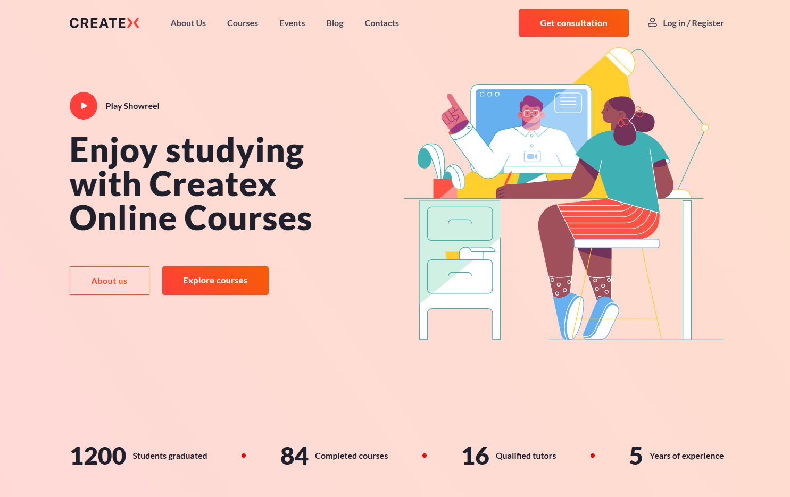

Верстка по макету - CreateX-maket

Адаптивная верстка многоcекционного сайта по готовому макету. Реализована семантическая HTML-разметка и структурированный CSS.
ДемоЯ начинающий frontend-разработчик и студент факультета информационных технологий. Имею практический опыт разработки с использованием HTML, CSS, SCSS и базовый опыт работы с React. Использую Vite для сборки проектов. На данный момент работаю над учебными проектами и постоянно расширяю знания в области frontend-разработки, архитектуры приложений и современных веб-технологий. Стремлюсь получить позицию Intern Frontend Developer для получения практического опыта коммерческой разработки.
Адаптивная верстка многоcекционного сайта по готовому макету. Реализована семантическая HTML-разметка и структурированный CSS.
ДемоWhirl - это одностраничный сайт (landing page), который я сверстал по готовому макету. Я использовал семантическую HTML-разметку и CSS для стилизации страницы. Для построения структуры применял Flexbox, аккуратно выстраивал отступы и выравнивание элементов.
ДемоИгра «Камень, ножницы, бумага» - это небольшой интерактивный проект, реализованный на чистом JavaScript. Пользователь выбирает один из вариантов, после чего компьютер случайным образом делает свой выбор, и определяется победитель.
Демо
Проект «Закрась цвета» - это интерактивное веб-приложение, в котором пользователь может создавать сетку разного размера и закрашивать ячейки выбранным цветом или случайными цветами.
ДемоВ приложении можно добавлять новые задачи, отмечать их как выполненные и удалять. Все данные сохраняются в localStorage, поэтому список задач остается после перезагрузки страницы.
ДемоВ приложении реализовано добавление, удаление и отметка задач как выполненных. Также добавлена фильтрация задач (все, выполненные, активные) и отображение количества выполненных и оставшихся задач.
Демо